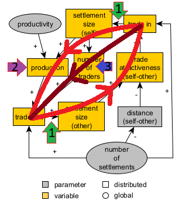
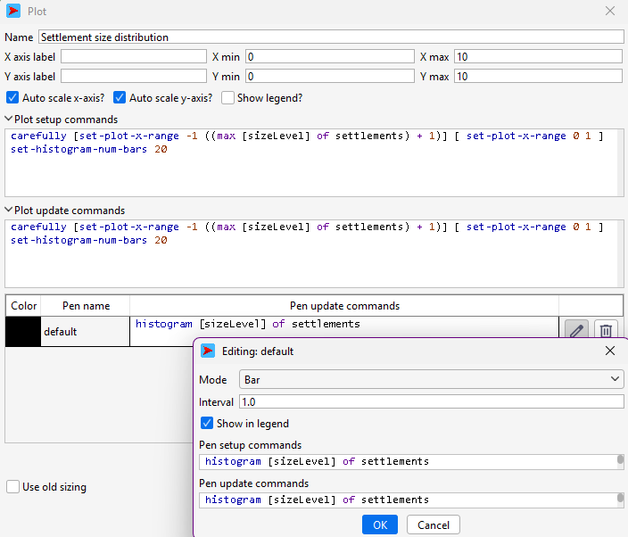
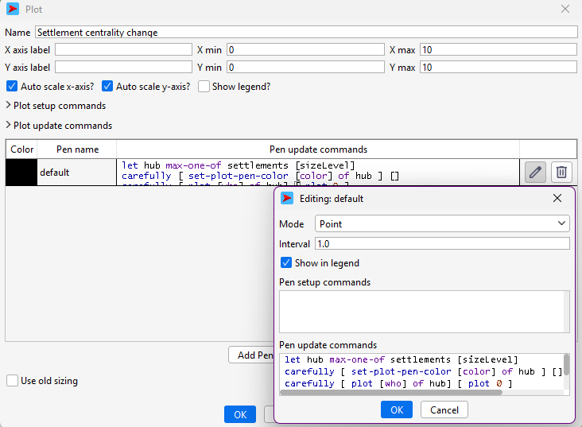
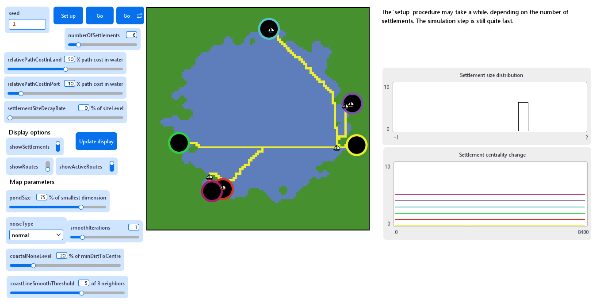
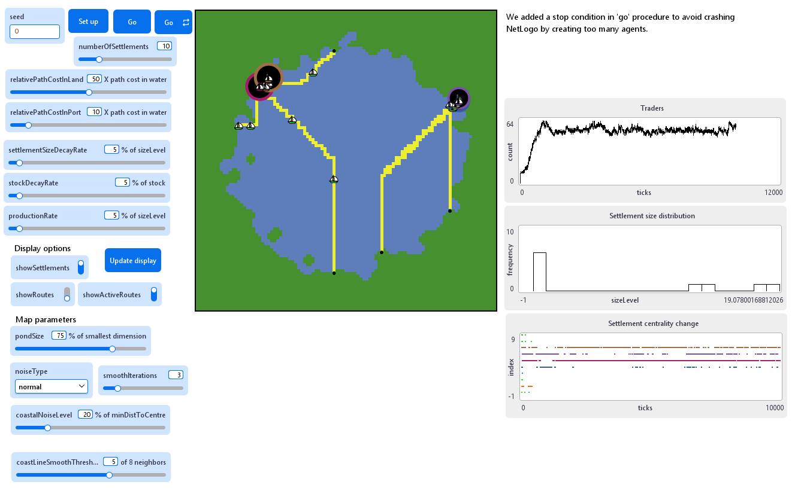
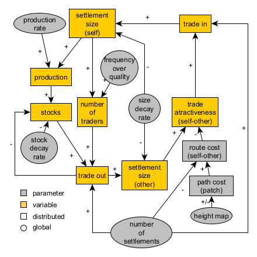

19 Implementing mechanisms
We now reach the “spicy” part of Pond Trade’s development. Until this point, settlements are entirely static, and traders are created only in setup, then travel back and forth without affecting settlements.
Remember that the core dynamics of the first-tier conceptual model was made up of two overlapping feedback loops. It could be decomposed as:
- Settlements produce goods, and have it decay over time.
- Traders choose destination✅, load, move✅ and unload goods.
- Settlements’ size increase with goods and decay otherwise.
- Settlements get more or less traders depending on their size.

The loops of the first-tier conceptual model and its key implementation points
19.1 Implementing one feedback loop - trade and economic size 🤔
First, we want to implement the general feedback loop described in the conceptual model, connecting settlement size and trade flow.
Before looking at the solution, try to write the code yourself:
- Traders load and unload goods at the base and destination settlements (use a variable:
cargoValue) - Settlements increase their size with goods coming by trade
- Reorganise the behaviour of traders inside a
update-tradersprocedure
- Settlement size decay over time, down to a minimum size of 1 (use a parameter:
settlementSizeDecayRate)
Things to consider:
- When should traders load and unload goods?
- How to increase settlement size based on goods?
- How to decrease settlement size over time?
Solution:
Let us reorganise the behavioural cycle of traders into a new separate procedure, update-traders:
to update-traders
let tradersInBase traders with [is-in-base]
let tradersInDestination traders with [is-in-destination]
; UPDATE LAST POSITION
ask traders
[
; update lastPosition if in a patch center
if ((xcor = [pxcor] of patch-here) and (ycor = [pycor] of patch-here))
[
set lastPosition patch-here
]
]
; UNLOAD
ask (turtle-set tradersInBase tradersInDestination) with [cargoValue > 0]
[
; unload cargo (changes sizeLevel)
unload-cargo
; load cargo (changes stock)
load-cargo
]
; CHOOSE DESTINATION
ask tradersInBase
[
; update the destination whenever in the base settlement and there is cargo to transport
choose-destination
]
; FIND DIRECTION in route
ask (turtle-set tradersInBase tradersInDestination)
[
find-direction
]
; MOVE towards the next position in the route
ask traders
[
; move following the route when there is cargo to transport
move-to-destination
]
end
to choose-destination ; ego = trader
let thisTrader self
; get routes connecting the base settlement
let routesFromBase get-routes-to-settlement [base] of thisTrader
; order these routes by benefit/cost ratio
set routesFromBase sort-by [ [?1 ?2] -> benefit-cost-of-route ?1 > benefit-cost-of-route ?2 ] routesFromBase
; print the options available
; foreach routesFromBase
; [
; print "==============================================================="
; print "route between:"
; print [who] of get-origin-and-destination ?
; print "has the benefit-cost ratio of:"
; print benefit-cost-of-route ?
; ]
; print "-x-x-x-x-x-x-x-x-x-x-x-x-x-x-x-x-x-x-x-x-x-x"
; select the one with higher benefit/cost ratio
set route first routesFromBase
; get the settlement of destination
set destination one-of (get-origin-and-destination route) with [who != [who] of ([base] of thisTrader)]
end
to find-direction ; ego = trader
; find where in the route list is the trader
let currentPosition position lastPosition route
; set direction if in a settlement
ifelse (currentPosition = 0) ; in the first extreme of the route list
[
; move in the route list towards larger index numbers
set direction 1
]
[
if (currentPosition = (length route - 1)) ; in the last extreme of the route list
[
; move in the route list towards smaller index numbers
set direction -1
]
]
; else the trader is in route to either the base or the destination
end
to move-to-destination ; ego = trader
; find where in the route list is the trader
let currentPosition position lastPosition route
; move through the route following direction
let targetPatch item (currentPosition + direction) route
;move-to targetPatch ; constant travel time (1 patch per tick)
facexy ([pxcor] of targetPatch) ([pycor] of targetPatch)
forward min (
list
(1 / [pathCost] of patch-here) ; the maximum distance in a tick in the current patch
(distancexy ([pxcor] of targetPatch) ([pycor] of targetPatch)) ; the distance to the target patch
)
end
to-report is-in-base ; ego = trader
report (xcor = [xcor] of base) and (ycor = [ycor] of base) ; if the trader arrived at the center of the base patch
end
to-report is-in-destination ; ego = trader
report (xcor = [xcor] of destination) and (ycor = [ycor] of destination) ; if the trader arrived at the center of the destination patch
endNotice that we refactor the previous code, splitting the former procedures into several more specialised parts.
We then define the new procedures to handle the interaction between traders and settlements:
traders-own [ base route destination direction lastPosition cargoValue ]
...
to unload-cargo ; ego = trader
let thisTrader self
let settlementHere one-of settlements-here
; unload cargo
ask settlementHere [ add-trade-effect [cargoValue] of thisTrader ]
end
to load-cargo ; ego = trader
let settlementHere one-of settlements-here
; load cargo
set cargoValue [sizeLevel] of settlementHere
end
to add-trade-effect [ value ] ; ego = settlement
set sizeLevel sizeLevel + value
end
Observe that we are defining a very simple “submodel”, where the economic size units of one settlement produce an equivalent amount of transportable value (cargoValue), which is transferred by traders to another settlement, again as economic size units. However, with this mechanism, we are increasing the economic size of settlements in every trader trip but never decreasing it. To avoid this, we must specify a second mechanism that “decays” economic size over time, up to an arbitrary baseline value (i.e., 1).
For now, we implement this mechanism directly inside the go procedure, where we also call update-traders:
to go
tick
update-traders
; the size of settlements decays with a constant rate, up to 1 (minimum)
ask settlements
[
set sizeLevel max (list 1 (sizeLevel * (1 - (settlementSizeDecayRate / 100)) ) )
]
update-display
endWe must add to the interface yet another parameter to regulate decay, settlementSizeDecayRate (from 0 to 25, by 0.01, default value of 5). This is expressed as the percentage of sizeLevel that is subtracted at each simulation step.
19.2 Visualising dynamics
To better explore the effects of this feedback loop, we should start adding plots to the interface. Select Plot in the drop-down menu and add two plot objects, as you have done with buttons, sliders, etc. Configure them as follows:
|  |
|  |
19.3 Checking the milestone File (step 8)
We can now run the model with a few settlements and repeat go many times. Explore different seed numbers. Are settlements reacting to traders’ dynamics at all? Is the value of settlementSizeDecayRate too high or low? What are we doing wrong?

Pond Trade step 8
19.4 Detecting and correcting mistakes 🤔
Before moving to the second feedback loop, we must solve our problem.
Use inspect and printing commands to debug the model.
Can you tell what is wrong with the model behaviour?
Solution:
If you followed any of the different approaches for debugging (e.g., inspecting agents, printing messages in mid-code), you have detected that traders are not transporting any cargo value. The problem resides in how we have scheduled the calls for unload-cargo and load-cargo. Notice that we added load-cargo to a conditional call ask (turtle-set tradersInBase tradersInDestination) with [cargoValue > 0], only relevant to traders with cargo, which is impossible for traders to fulfil initially.
We reorganise update-traders as follows:
to update-traders
...
; UNLOAD
ask (turtle-set tradersInBase tradersInDestination) with [cargoValue > 0]
[
; unload cargo (changes sizeLevel)
unload-cargo
]
; LOAD
ask (turtle-set tradersInBase tradersInDestination)
[
; load cargo (changes stock)
load-cargo
]
...
end
Pond Trade step 8 (after correction)
We can now see how, quite often, one or very few hubs emerge among settlements.
19.5 Implementing two feedback loops - trade-production and trade-number of traders 🤔
We split the general positive feedback loop into two, as specified in our concept model. These represent the effects of trade flow in settlement size through change in stock of goods and the number of traders per settlement.
Before looking at the solution, try to write the code yourself (medium-to-hard challenge):
- Settlements produce goods every tick in proportion to their size (use a parameter:
productionRate; use variables:sizeLevel,stock)
- The number of traders per settlement increases with settlement size (use variables:
currentNumberOfTraders,potentialNumberOfTraders)
- Reorganise the behaviour of settlements inside a
update-settlementsprocedure
Things to consider:
- How to increase the stock of settlements over time?
- How to calculate the potential number of traders?
- How to create new traders when needed? How to remove them?
Solution:
The key addition is that now we will have to differentiate, for each settlement, between currentNumberOfTraders and potentialNumberOfTraders, and update these according sizeLevel. To wrap up all this, we finally implement an update procedure specifically for settlements (update-settlements).
We will also need to manage the traders that are left outside the maximum value for their base settlement. We create the tag isActivated to avoid creating and deleting too many traders in the same simulation run (i.e., it might become a problem as who numbers grow).
settlements-own
[
sizeLevel
currentNumberOfTraders potentialNumberOfTraders
]
traders-own
[
isActivated
base route destination direction lastPosition
cargoValue
]
...
to create-traders-per-settlement
ask settlements
[
let thisSettlement self ; to avoid the confusion of nested agent queries
set potentialNumberOfTraders get-potential-number-of-traders
hatch-traders potentialNumberOfTraders ; use the sizeLevel variable as the number of traders based in the settlement
[
setup-trader thisSettlement
]
set currentNumberOfTraders get-current-number-of-traders
]
end
to setup-trader [ baseSettlement ]
set base baseSettlement
set isActivated true
; give meaningful display related to base
set shape "sailboat side" ; import this shape from the library (Tools > Shape editor > import from library)
set color [color] of base
set size 3
choose-destination
end
...
to update-settlements
ask settlements
[
let thisSettlement self
; the sizeLevel of settlements decays with a constant rate, up to 1 (minimum)
set sizeLevel max (list 1 (sizeLevel * (1 - (settlementSizeDecayRate / 100)) ) )
; determine the current and potential number of traders
set currentNumberOfTraders get-current-number-of-traders
set potentialNumberOfTraders get-potential-number-of-traders
; conditions favors the creation of new traders
if (random-float 1 > currentNumberOfTraders / potentialNumberOfTraders )
[
; create a new trader or activate an old one
repeat 1
[
ifelse (any? traders with [not isActivated])
[
ask one-of traders with [not isActivated]
[
setup-trader thisSettlement
move-to thisSettlement
]
]
[
hatch-traders 1
[
setup-trader thisSettlement
]
]
]
set currentNumberOfTraders get-current-number-of-traders ; update currentNumberOfTraders
]
]
end
to update-traders
...
; UNLOAD
ask (turtle-set tradersInBase tradersInDestination) with [cargoValue > 0]
[
; unload cargo (changes sizeLevel)
unload-cargo
]
; CHECK if the trader can be sustained when in the base
ask tradersInBase
[
if ([potentialNumberOfTraders < currentNumberOfTraders] of base)
[
; the current number of traders cannot be sustained
set isActivated false
; update currentNumberOfTraders of base
ask base [ set currentNumberOfTraders get-current-number-of-traders ]
]
]
set activeTraders traders with [isActivated] ; update active traders
set tradersInBase tradersInBase with [isActivated] ; update traders in base
; LOAD
ask (turtle-set tradersInBase tradersInDestination)
[
; load cargo (changes stock)
load-cargo
]
...
end
...
to-report get-potential-number-of-traders ; ego = settlement
report (
1 +
(sizeLevel - 1)
)
end
to-report get-current-number-of-traders ; ego = settlement
let thisSettlement self
report count traders with [isActivated and base = thisSettlement ]
end
Settlements will now calculate potentialNumberOfTraders at every simulation step as a number equal to its size and will be allowed to create/reactivate or deactivate any traders accordingly.
Add a new Plot to visualise the count of traders through time, using the update command: plot count traders with [isActivated]
Our second feedback loop is now up and running!
However, our implementation is still rough around the edges and needs some refactoring and model extensions.
The representation of the production process is overly simplistic. Since there is no separate entity for sizeLevel, production value is immediately replaced after traders load their cargo. We must introduce a new settlement variable, stock, to keep track of the flow of economic value and implement a more explicit representation of production and value decay, independent of size decay. For this, we introduce two new parameters, productionRate and stockDecayRate (use the same interface configuration as settlementSizeDecayRate).
settlements-own
[
...
stock
]
...
to create-coastal-settlements
; consider only coastal patches
let coastalPatches patches with [(isLand = true) and (any? neighbors with [isLand = false])]
repeat numberOfSettlements
[
; ask a random coastal patch without a settlement already
ask one-of coastalPatches with [not any? settlements-here]
[
sprout-settlements 1 ; creates one "turtle" of breed settlements
[
set sizeLevel 1 ; the size level is initiated at minimum (i.e., 1)
set stock 0
set shape "circle 2"
]
; replace the land path cost with the port pathCost
set pathCost relativePathCostInPort
; exclude this patch from the pool of coastal patches
set coastalPatches other coastalPatches
]
]
end
...
to load-cargo ; ego = trader
let settlementHere one-of settlements-here
; load cargo
set cargoValue [stock] of settlementHere
ask settlementHere [ set stock 0 ] ; empty the settlement stock
end
...
to update-settlements
ask settlements
[
let thisSettlement self
; the sizeLevel of settlements decays with a constant rate, up to 1 (minimum)
set sizeLevel max (list 1 (sizeLevel * (1 - (settlementSizeDecayRate / 100)) ) )
; production in stock also decays with a constant rate
set stock stock * (1 - (stockDecayRate / 100))
; prodution is generated in proportion to sizeLevel, following a constant rate
set stock stock + sizeLevel * (productionRate / 100)
; determine the current and potential number of traders
set currentNumberOfTraders get-current-number-of-traders
set potentialNumberOfTraders get-potential-number-of-traders
; conditions favors the creation of new traders
if (random-float 1 > currentNumberOfTraders / potentialNumberOfTraders )
[
; create a new trader or activate an old one
repeat 1
[
ifelse (any? traders with [not isActivated])
[
ask one-of traders with [not isActivated]
[
setup-trader thisSettlement
move-to thisSettlement
]
]
[
hatch-traders 1
[
setup-trader thisSettlement
]
]
]
set currentNumberOfTraders get-current-number-of-traders ; update currentNumberOfTraders
]
]
end19.7 Checking the milestone File (step 9)
We can now observe that the number of traders in our pond oscillates around a stable low level most of the time. We can observe some exceptions by exploring higher values of numberOfSettlements. With enough settlements, our feedback loops push the dynamics towards the emergence of hubs, boosting the overall number of traders.

Pond Trade step 9
19.8 Updating the conceptual model
We reach the end of the implementation steps for the first-tier Pond Trade model. Given all the changes and extensions we made, we must revisit our conceptual model and update it accordingly.

Pond Trade conceptual model revised at step 9 (first tier)
This graphical description is still far from the implementation code, as it should be. However, it is now adequate for the new conceptual changes we introduced in the code.